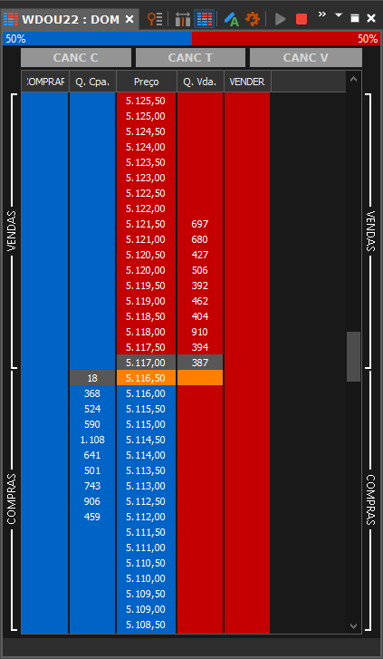
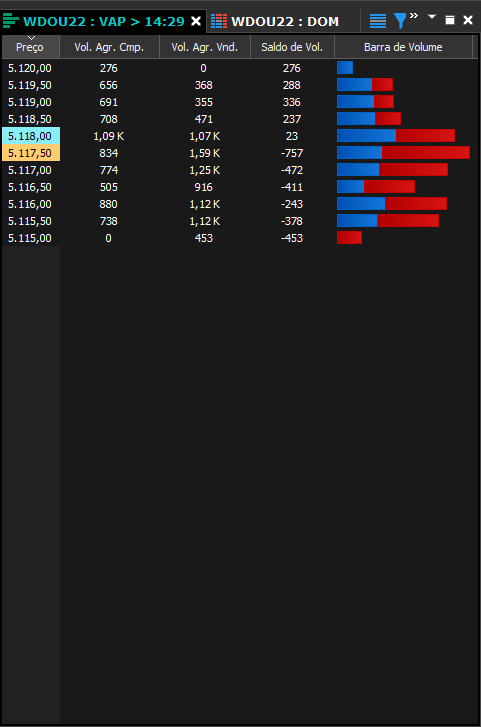
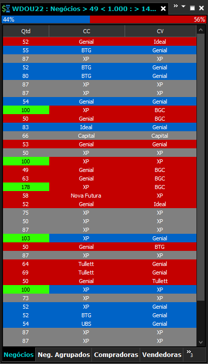

Como fazer operações de day trade?
Muitos investidores iniciantes procuram saber mais como fazer operações de day trade na bolsa. Afinal de contas, existe quase que um assédio publicitário com um volume de propagandas e anúncios na internet que promovem esse tipo de estratégia de curto prazo.
E, neste sentido, destaca-se que basicamente o day trade funciona amparado na análise gráfica, também conhecidas como análises técnicas. Com elas, os traders estudam comportamentos gráficos para encontrar tendências.
Aqui, nós focamos numa técnica chamada de Tape Reading, que consiste na leitura e interpretação das ordens que estão entrando no mercado no momento em que desejamos operar. Assim, é possível entender melhor qual força está pressionando o preço do ativo em questão, seja pra cima (COMPRA) ou para baixo (VENDA).
Para tanto, fazemos uso de algumas ferramentas na plataforma Tryd Pro, quais sejam:
-
DOM
 -
VAP - Volume at Price
 -
Times and Trades

Desse modo, aliadas ao gráficos, temos todas as ferramentas que precisamos para nos sair muito melhor na antecipação dos movimentos do mercado.
Como a Adam 12 Trades Pode me Ajudar?
Somos sua melhor opção em desenvolvimento em trades, especialmente quando Mini Dólar da B3 no Brasil! Temos diversas maneiras para te ajudar no seu aperfeiçoamento nos trades ou seu início do ZERO nesse mundo dos investimentos na bolsa.
Então se você quer entrar nessa com a gente, no topo da página temos 2 Opções que você pode escolher, de acordo o que for melhor para você entre: Curso do zero ao Avançado e nossa Sala ao Vivo, onde você aprende na prática, acompanhando-nos nas nossas operações.
Então é só ir lá e escolher o que há de melhor para você nesse mercado!